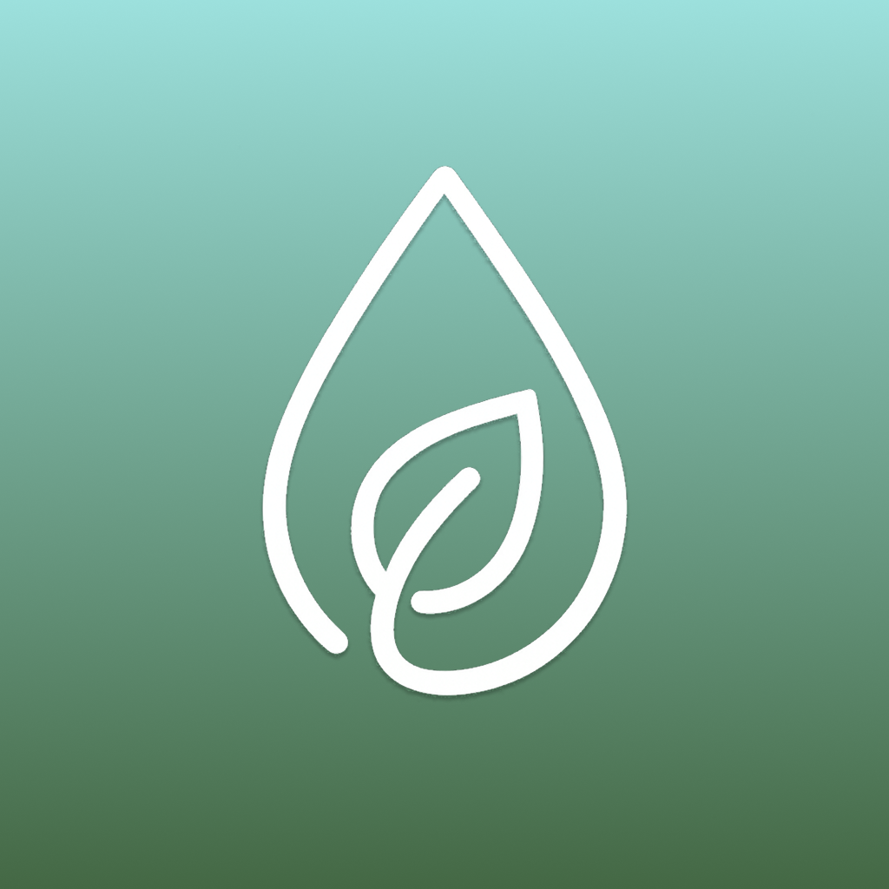
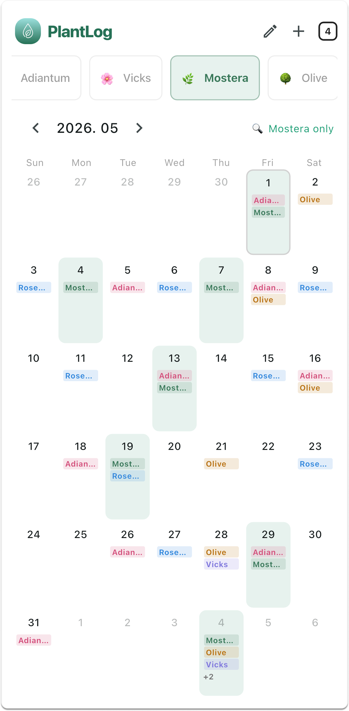

Watering records
Log when each plant was watered and view the history on a calendar.

PlantLog is a simple plant watering tracker made for people who want to record watering history and quickly see which plants need water.

Log when each plant was watered and view the history on a calendar.
See which plants need water today based on your own watering cycle.
Focused on the essentials: plants, watering dates, and simple tracking.
PlantLog Plus is a one-time in-app purchase that unlocks unlimited plant registration and removes ads.